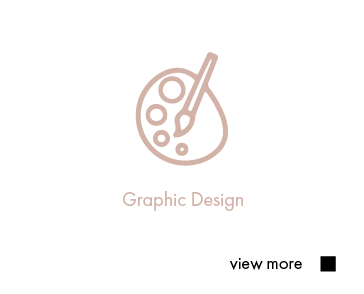

About
人と人の繋がりを大切に…
「想い」や「こだわり」を活かしたデザインを心がけています。

早川景未
keimi hayakawa
千葉県出身。２児の母。
前職にてWEBデザインに携わる機会が
増えた事がきっかけとなり、IT業界に転職を決意。
その後デザスタへの入学を決意し、
より本格的なデザインとWeb制作を学ぶ。
Personal
・実は韓国語が話せる
・エステティシャンをしていた
Works
view more


Service
※目的やター ゲットにあったデザインをお作りいたします。
-

・コーポレートサイトやランディングページ(LP)
・HTML / CSSを用いてコーディング
・JavaScriptを使用し デザインに動きをつける。
・レスポンシブ対応
・SNSバナー・投稿デザイン -
・各種チラシ
・展示会用ポスター
・リーフレット
CONTACT
お仕事のお問合せ・ご依頼はもちろん
ご相談も賜わります！
どうぞお気軽にお問い合せください。